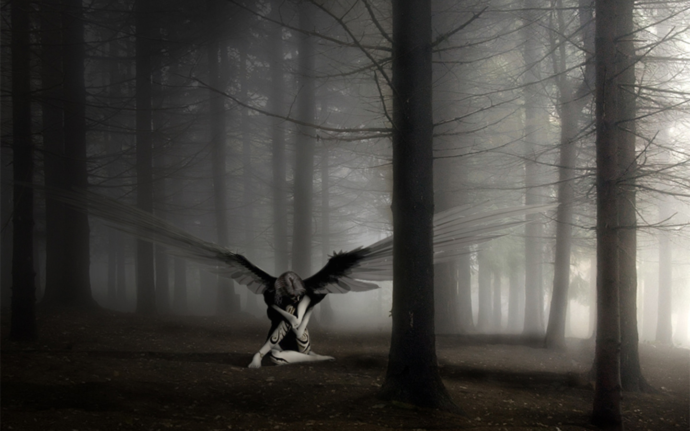

Only one page full of Poetry and Beutiful Messages
You'll learn the difference
After some time, you learn the difference,the subtle difference, between holding a hand and chaining a soul.
You learn that it doesn’t mean leaning on someone, and that company doesn’t always mean safety.
You begin to understand that kisses are not contracts, and gifts are not promises.
You start to accept your defeats with your head held high and your eyes forward, with the grace of an adult rather than the sadness of a child.
After a while, you learn that the sun burns if you stay exposed for too long. And you learn that no matter how much you care, some people simply don’t care…
And you accept that no matter how good a person is, they will hurt you from time to time, and you need to forgive them for it.
You learn that speaking can ease emotional pain.
And you learn to build all your roads in the present, because the ground of tomorrow is too uncertain for plans, and the future has a way of falling through.
You discover that it takes years to build trust and only seconds to destroy it.
That you can do things in an instant for which you will regret for the rest of your life.
You learn that true friendships continue to grow, even over long distances.
And what matters is not what you have in life, but who you have in life.
And that good friends are the family we are allowed to choose.
You learn that you don’t have to change friends if you understand that friends change…
You learn to notice that your best friend and you can do anything, or nothing, and still have good times together.
You discover that the people you care about most in life are taken from you very quickly, so you should always treat those you love with loving words. It may be the last time you see them.
You learn that circumstances and environments influence us, but… We are responsible for ourselves.
You begin to learn that you shouldn’t compare yourself to others, but to the best you can be.
You discover that it takes a long time to become the person you want to be, and that time is short.
You learn that it doesn’t matter where you’ve come from, but where you’re going. But if you don’t know where you’re going, any place will do.
Over time, you learn that you either control your actions or they will control you.
And that being flexible doesn’t mean being weak or lacking personality, for no matter how delicate and fragile a situation may be, there are always two sides.
You learn that heroes are people who did what was necessary, facing the consequences.
You learn that patience requires a lot of practice.
You discover that sometimes the people you expect to kick you when you fall are the very ones who help you get back up.
You learn that maturity is more about the types of experiences you’ve had and what you’ve learned from them than how many birthdays you’ve celebrated.
You learn that there is more of your parents in you than you suppose.
You learn that you should never tell a child that dreams are nonsense. Few things are as humiliating, and it would be a tragedy if they believed that.
You learn that when you’re angry, you have the right to be angry, but that doesn’t give you the right to be cruel.
You discover that just because someone doesn’t love you the way you want them to doesn’t mean they don’t love you with everything they have. There are people who love us but simply don’t know how to show it or live it.
You learn that it’s not always enough to be forgiven by someone. Sometimes you have to learn to forgive yourself. You learn that with the same severity with which you judge, you will one day be condemned.
You learn that it doesn’t matter how many pieces your heart has been broken into. The world doesn’t stop for you to fix it. You learn that time is not something you can go back to; therefore, plant your garden and decorate your soul,
instead of waiting for someone to bring you flowers.
And you learn that you can truly endure. That you are truly strong and can go much further, after thinking you can’t anymore.
And that, indeed, life has value, that you have value in life! Our gifts are traitorous and make us lose the good we could achieve, if it weren’t for the fear of trying.
May this message, authored by Veronica A. Shoffstall, serve as an additional element for reflection on the losses and gains you have accumulated,
and may your hopes be renewed for a life with an increasingly real meaning, filled with the best events it can offer!
About Creating your own Poems
Tips and advices on how to make it sound good.
Types of Poem
Content Goes here
- Type 1
- Type 2
- Type 3
- Visual Poems Click here to see beautiful examples of Visual Poems
How to advertise your Art
Content goes here
Famous Poets of all Times
Content goes Here
See also our following list of selected Poems